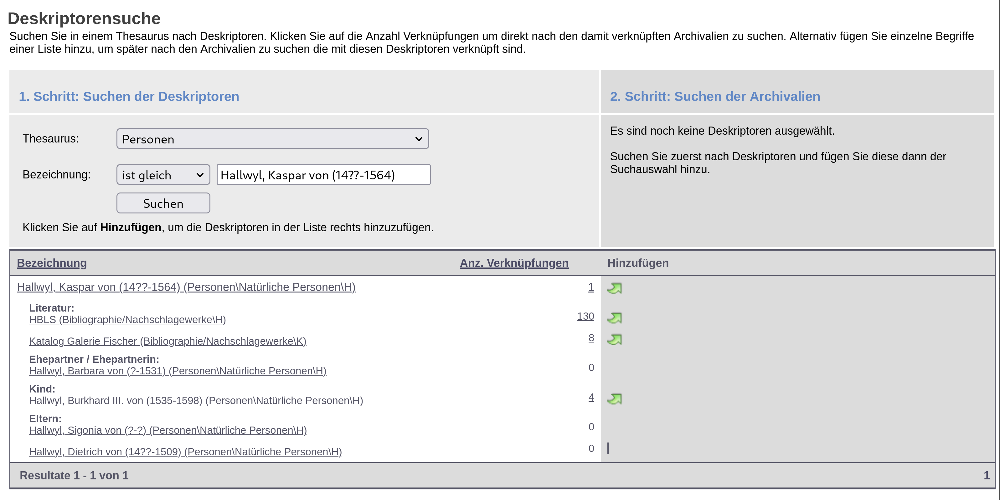

Deskriptorenportal
Abbildung von Personendeskriptoren mit der
Records in Contexts Ontology (RiC-O)
Ausgangslage & Ziel
- Die Burgerbibliothek Bern verwendet zur Verzeichnung ihrer Archivalien Deskriptoren.
- Die Deskriptoren sollen in einen RDF-Datensatz unter Verwendung der Records in Contexts Ontology gewandelt werden.



Screenshot der Deskriptorensuche im Archivkatalog der Burgerbibliothek Bern.
Records in Contexts (RiC)
- RiC ist ein vom International Council of Archives (ICA) verabschiedeter Standard, welcher der Beschreibung von Archivalien dient. (EGAD, 2024)
- Die Records in Contexts Ontology (RiC-O) ist als generische Blaupause zur Erstellung von
RDF-Datensätzen für den Gebrauch im archivalischen Kontext entworfen. (ICA EGAD, 2024, Abs. «RiC-O design principles»)
Datenaggregation (1/2)
- CSV-Export via AIS (49 242 Einträge)
- Relationen zwischen Deskriptoren via Web Scraping (82 027 Einträge)
- Serialisierung in Turtle mit RDFLib (xx Tripel) (RDFLib Team, 2024)
- Inferenzbildung mit OWL-RL (xx Tripel) (Herman, 2014)
- RDF-Triple-Store / SPARQL-Engine Qlever (Bast et al., 2022)
Datenaggregation (2/2)
Datenmodell
Webapplikation
Suche
Zeitstrahl
Deskriptorendetailansicht
Diskussion
- Datenmodellierung: Konsistenz der Lebensdaten; Geburts- und Todesdatum ebenfalls als Eventtypse modellieren? Oder z. B. BIO Vocabulary verwenden?(Davis et al., 2011)
- OWL-RL: Infernzbildung führt zu Tripel mit Literalen in der Subjektposition. Patch ist eine Kombination der Lösungsvorschläge von al-Dosari (2023) und Car (2023)
Literaturverzeichnis
- al-Dosari, M. (2023, März). OWL RL creates triples with a Literal as Subject when evaluating PROV-O ontology #50. Zugriff am 28. Dezember 2024 unter https://github.com/RDFLib/OWL-RL/issues/50#issuecomment-1476897684
- Bast, H., Kalmbach, J., Klumpp, T., Kramer, F., & Schnelle, N. (2022). Efficient and Effective SPARQL Autocompletion on Very Large Knowledge Graphs. Proceedings of the 31st ACM International Conference on Information & Knowledge Management, 2893–2902. https://doi.org/10.1145/3511808.3557093
- Car, N. (2023, August). Unexpected behaviour of OWL-RL reasoner (Literals in the position of Subjects) #63. Zugriff am 28. Dezember 2024 unter https://github.com/RDFLib/OWL-RL/issues/63#issuecomment-2283074918
- Davis, I., & Galbraith, D. (2011, Juni). BIO: A vocabulary for biographical information. Zugriff am 17. Dezember 2024 unter http://purl.org/vocab/bio/0.1/
- EGAD. (2024, Juni). Records in Contexts (RiC). Zugriff am 17. Dezember 2024 unter https://www.ica.org/ica-network/expert-groups/egad/records-in-contexts-ric/
- Herman, I. (2014, Oktober). OWL-RL: OWL-RL: A simple OWL2 RL reasoner on top of RDFLib. https://doi.org/10.5281/zenodo.14543
- ICA EGAD. (2024, September). International Council on Archives Records in Contexts Ontology (ICA RiC-O). Zugriff am 2. November 2024 unter https://www.ica.org/standards/RiC/RiC-O_1-0-2.html
- RDFLib Team. (2024). RDFLib. Zugriff am 17. November 2024 unter https://github.com/RDFLib/rdflib/li>